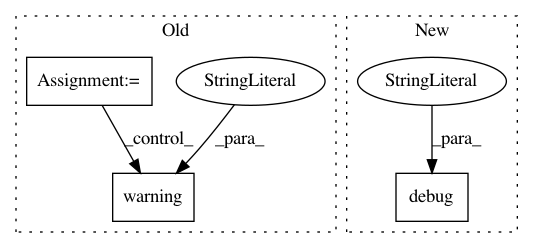

1b66cff1b4af1b32d72839af19282f526d04acf0,lib/streamlit/proxy/ClientWebSocket.py,ClientWebSocket,_handle_backend_msg,#ClientWebSocket#Any#Any#Any#,117
Before Change
backend_msg = protobuf.BackMsg()
try:
backend_msg.ParseFromString(payload)
command = backend_msg.command
if command == protobuf.BackMsg.Command.Value("HELP"):
LOGGER.debug("Received command to display help.")
os.system("python -m streamlit help &")
elif command == protobuf.BackMsg.Command.Value("CLOUD_UPLOAD"):
yield self._save_cloud(connection, ws)
else:
LOGGER.warning("no handler for "%s"",
protobuf.BackMsg.Command.Name(backend_msg.command))
except Exception as e:
LOGGER.error("Cannot parse binary message: %s", e)
@gen.coroutine
After Change
backend_msg = protobuf.BackMsg()
try:
backend_msg.ParseFromString(payload)
LOGGER.debug("Received the following backend message:")
LOGGER.debug(backend_msg)
msg_type = backend_msg.WhichOneof("type")
if msg_type == "help":
LOGGER.debug("Received command to display help.")
In pattern: SUPERPATTERN
Frequency: 3
Non-data size: 3
Instances
Project Name: streamlit/streamlit
Commit Name: 1b66cff1b4af1b32d72839af19282f526d04acf0
Time: 2018-08-15
Author: adrien.g.treuille@gmail.com
File Name: lib/streamlit/proxy/ClientWebSocket.py
Class Name: ClientWebSocket
Method Name: _handle_backend_msg
Project Name: streamlit/streamlit
Commit Name: 80a927a861111c34599f8e0105942192ed37e6e7
Time: 2018-08-16
Author: adrien.g.treuille@gmail.com
File Name: lib/streamlit/proxy/ClientWebSocket.py
Class Name: ClientWebSocket
Method Name: _handle_backend_msg
Project Name: ray-project/ray
Commit Name: a9ea139317c39cde13f82eb2034fe561fa8bc196
Time: 2020-04-16
Author: rliaw@berkeley.edu
File Name: python/ray/util/sgd/torch/torch_runner.py
Class Name: TorchRunner
Method Name: _initialize_dataloaders